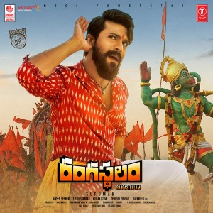

Actors and Their Best Movie
The south actors put thier heart into the characters which made the audience spellbound. some movies will not lose their charm irrespective of the time period.That type of movies i have gathered and presenting them to you.
Number
Actor Name
Movie Name
Release Year
Director Name
Actress Name
Movie Image
More info
1
Ram Charan
Rangastalam
2018
Sukumar
Samantha

Ram Charan
2
Prabhas
Bahubali
-The begining
2015
Rajamouli
Anushka,Tamanna
Prabhas
3
JR NTR
Jai Lava Kusha
2022
Rajamouli
Oliver
JR NTR
4
Allu Arjun
Pushpa
-The Rise
2021
Sukumar
Rashmika Mandana
Allu Arjun
5
Pawan kalyan
Toli Prema
1998
Karunaakaran
Keerthi Reddy
Pawan kalyan
6
Mahesh Babu
Pokiri
2006
Puri Jagannath
Ileana
Mahesh Babu